The Beauty of Malaysian Culture
Traditions, Clothing, Music and Art
Malaysia is a multicultural country filled with rich traditions, colourful celebrations and unique customs. Its cultural diversity reflects the history and identity of our nation. Discover the different traditions and cultural heritage that make Malaysia special.
A Nation of Diverse Cultures
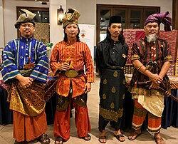
Malay Culture
- Traditional clothing: Baju Melayu and Baju Kurung.
- Traditional food: Nasi lemak and rendang.
- Traditional celebrations: Hari Raya Aidilfitri.
- Traditional art: Batik and traditional dance.
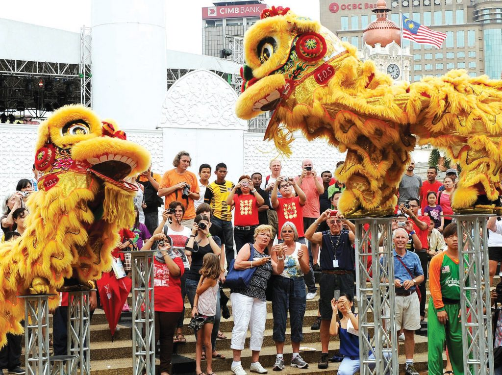
Chinese Culture
- Traditional clothing: Cheongsam and Samfu.
- Traditional food: Mooncakes and dumplings.
- Traditional celebrations: Chinese New Year and Mid-Autumn Festival.
- Traditional art: Lion dance and calligraphy.
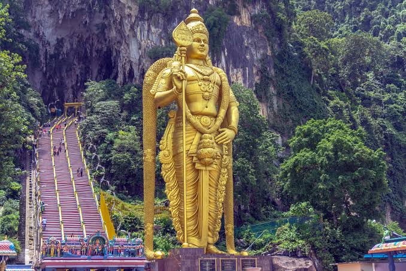
Indian Culture
- Traditional clothing: Saree and Dhoti.
- Traditional food: Roti canai and banana leaf rice.
- Traditional celebrations: Deepavali and Thaipusam.
- Traditional art: Bharatanatyam dance and Kolam.
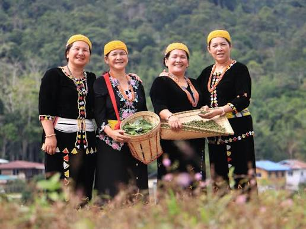
Indigenous Culture
- Communities: Orang Asli, Iban, Bidayuh, Kadazan-Dusun and many others.
- Traditional clothing: Distinctive garments and accessories.
- Traditional celebrations: Gawai Dayak and Kaamatan.
- Traditional heritage: Handicrafts, music, dances and traditional knowledge.
Traditional Clothing
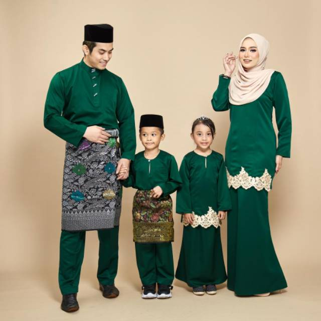
Baju Kurung and Baju Melayu
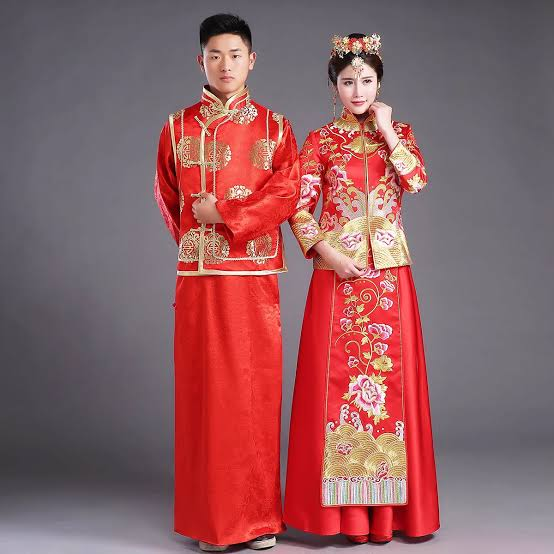
Cheongsam and Samfu
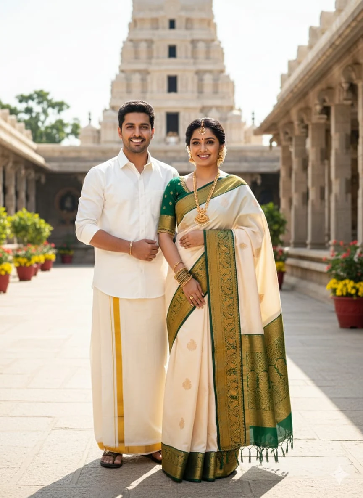
Saree and Dhoti
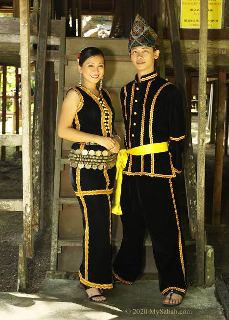
Baju Kadazan Dusun
Traditional clothing represents the cultural identity and heritage of different communities in Malaysia. Each outfit has its own unique design, colours and meaning. These traditional garments are commonly worn during festivals, cultural performances and special occasions.
Traditional Music and Dance
Zapin

Zapin is a traditional Malay dance that arrived with Arab traders, together with Islamic culture. Pairs of dancers perform quick, graceful footwork to the music of the gambus (lute) and rebana (hand drum). Today it is performed at weddings, festivals and cultural shows across Malaysia.
Lion Dance

The lion dance is performed by Chinese communities during Chinese New Year and other celebrations to bring good luck. Two performers control the lion's head and tail, moving to the beat of drums, cymbals and gongs. It combines martial arts, acrobatics and music.
Bharatanatyam

Bharatanatyam is a classical Indian dance from Tamil Nadu that is kept alive by Malaysia's Indian community. Dancers use precise footwork, hand gestures called mudras and facial expressions to tell stories, usually wearing bright silk costumes and temple jewellery.
Sumazau

Sumazau is the traditional dance of the Kadazan-Dusun people of Sabah, performed especially during the Kaamatan harvest festival. Inspired by eagles flying over rice fields, dancers slowly move their arms like wings to the sound of gongs. Dancers usually wear black costumes decorated with gold.
Malaysian Arts and Heritage
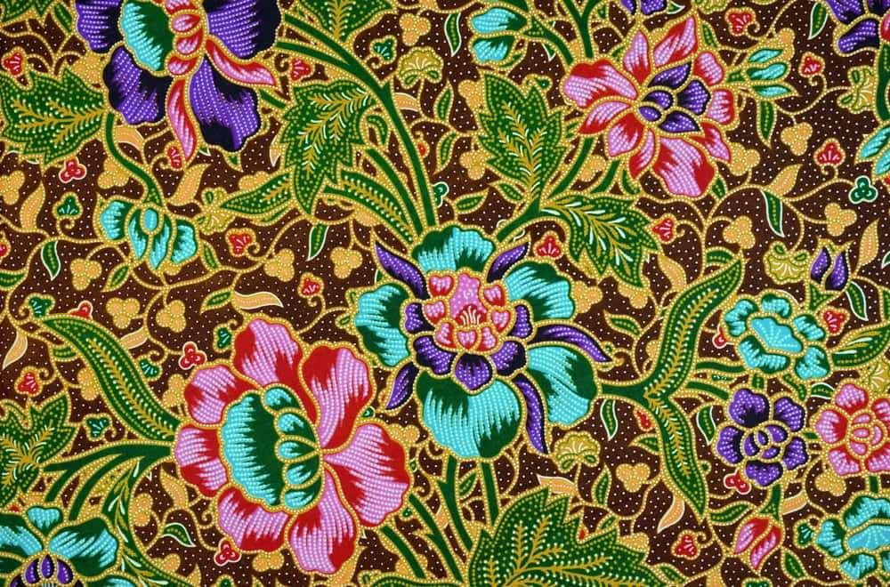
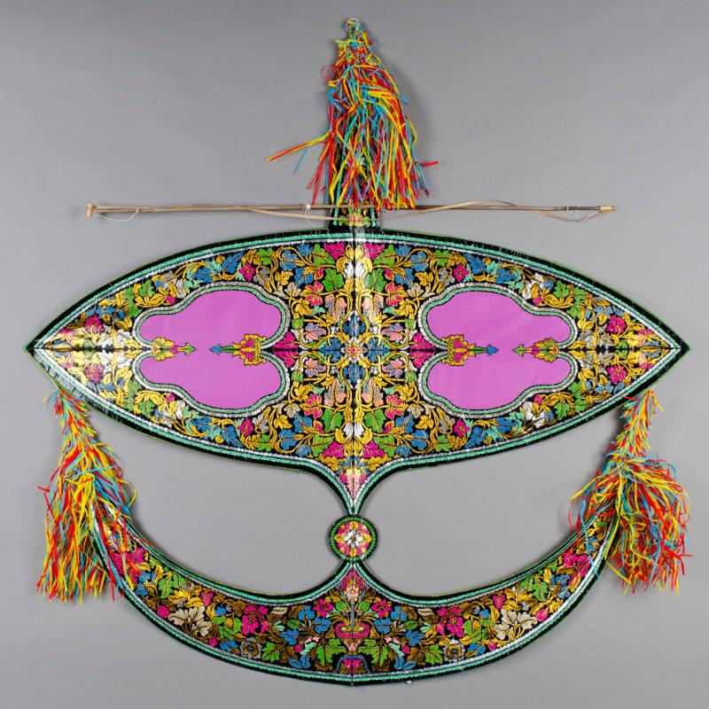
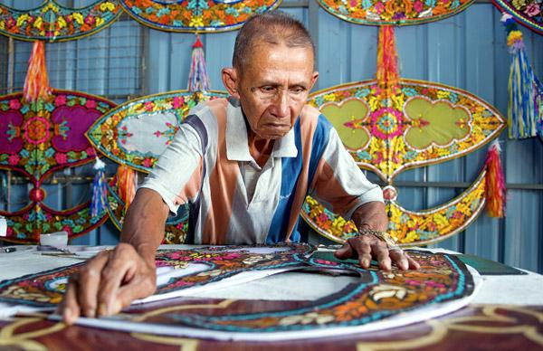
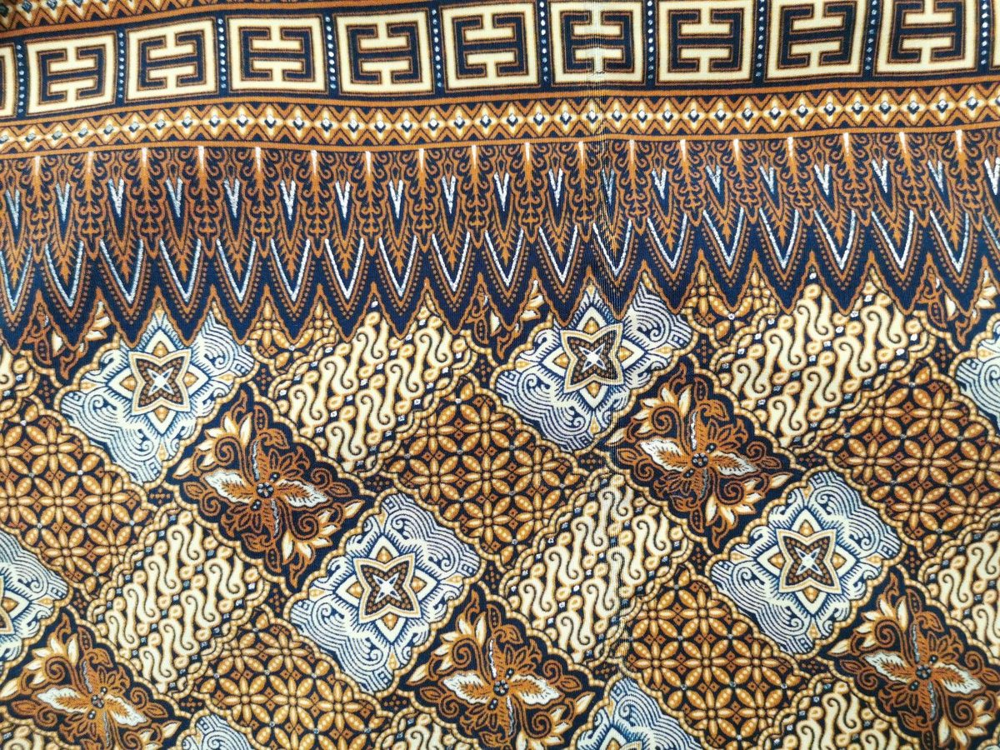
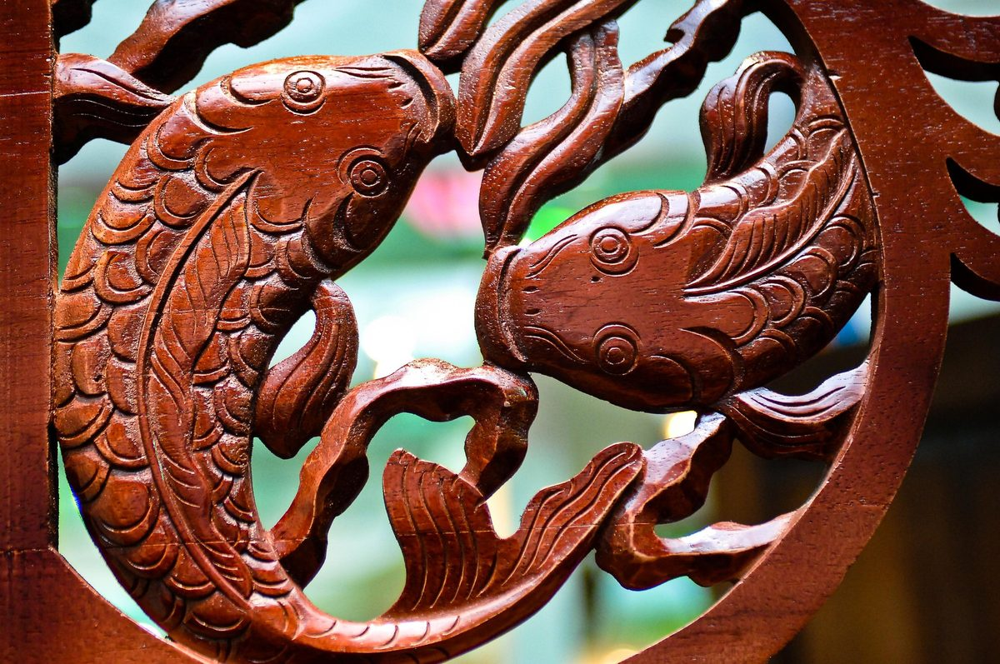
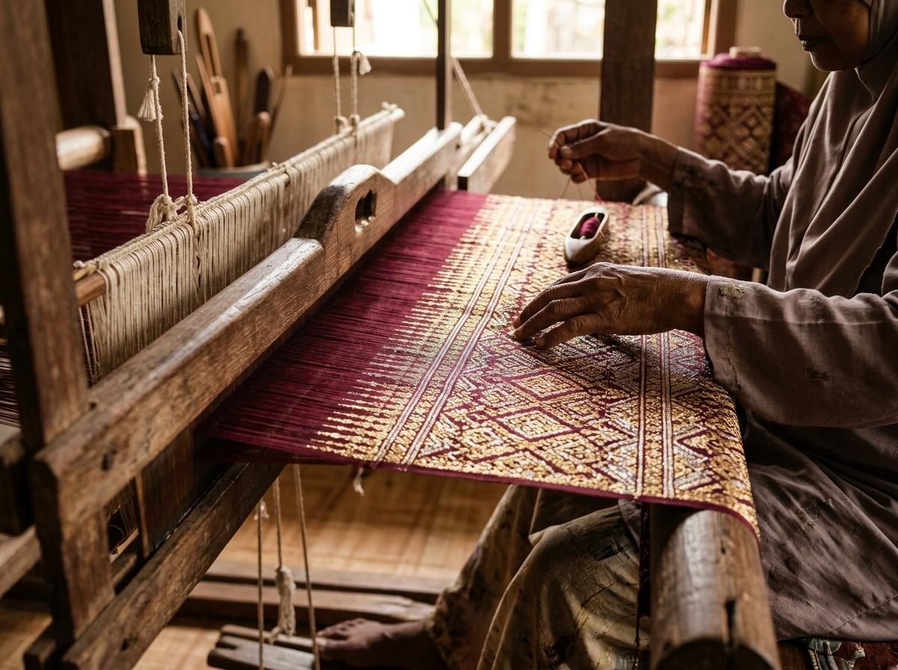
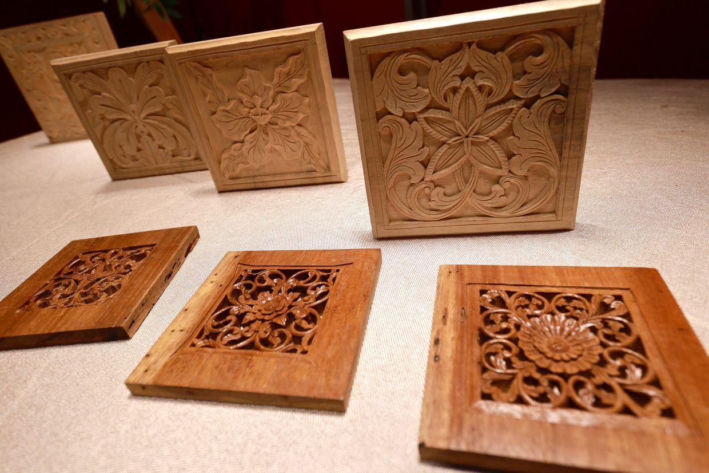
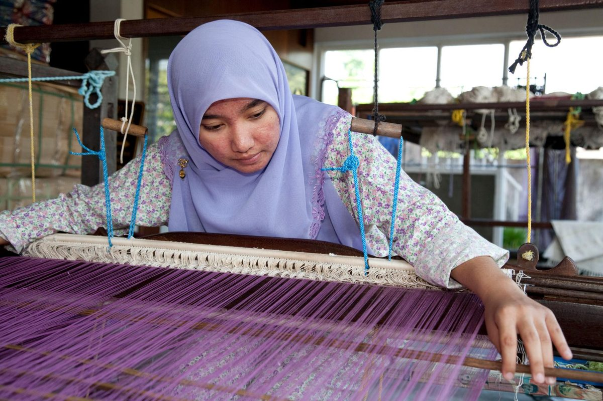